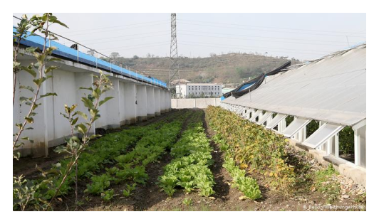

leben in nordkorea

die hauptstadt ist pjöngjang
[3 mio. einwohner]

man kann und darf, als tourist
in nordkorea, nur in begleitung
von staatspersonal herumlaufen.
häuser sind veraltet und nass.
es gibt eine rundum überwachung im ganzen land.
es gibt keine miete und keine steuern.
ab 1990 bricht die wirtschaft
zusammen und das land wird
zu einem entwicklungsland mit
armut und hungersnöten.
die regierungsform ist eine
diktatur unter kim jong-un.
das land hat die höchsten
militärausgaben weltweit und
ist die 5. größte militärmacht
der welt.
strom im land ist ein problem
es wird versucht mit solarpaneelen
einen ausgleich zu schaffen.
es gibt keinen internetzugang
im land und telefonieren geht
nur innerhalb nordkoreas.
smartphones sind nur aus dem
eigenen land erhältlich von
einer einzigen marke aus dem
land.
statt google gibt es nur
nordkoreanisches intranet
und das ganze internet umfasst
insgeamt nur 28 webseiten.
alle dienste sind staatlich
überwacht und programmiert.
es gibt dazu nur einen einzigen
radiosender.
der heimliche konsum von
westlichen medien wird mit
dem tod bestraft.

die partei entscheidet
welchen beruf man ausführen
muss.
beim friseur sind
10 männerfrisuren
18 frauenfrisuren
wählbar. die entscheidung
richtet sich nach dem beruf.
lebensmittel gibt es über
lebensmittelmarken.
durch ernteausfälle 2019
wurde die tägliche
lebensmittelration auf 300g
pro person reduziert.
die hungersnot reicht bis zum
kannibalismus.

loyalität und gehorsam wird von
geburt an beigebracht.
es wird gelehrt, dass die usa
die bösen sind und die kims die
gottgleichen retter der nation
sind.
männer müssen mind. 10 jahre
ins militär.
durch strafen und arbeitslager
sind menschen gezwungen
den herrscher anzubeten und
alles mit zu machen.
größte sterbeursache ist der
hungertot, in jeder schicht der
bevölkerung, egal wie reich
man ist.
menschen sind sich bewusst,
dass es eine ander welt gibt.
die menschen riskieren die
strafen oft und konsumieren
heimlich westliches radio.
die flucht ist nur über
drittstaaten möglich wie china.
dafür muss man die grenzleute
bestechen mit geld und es
dauert meist jahre.
mehr frauen als männer
flüchten, da männer noch mehr
überwacht werden.
seit dem koreakrieg von 1953
flüchteten über 30 000
menschen in den süden.
es gibt auch menschen, welche
nach nordkorea gegangen sind.
seit 2013 waren das insgesamt
15 menschen, die meisten
wurden jedoch wieder
ausgewiesen.
an der entmilitarisierten zone zu
südkorea hängen millionen
gebetsbänder.